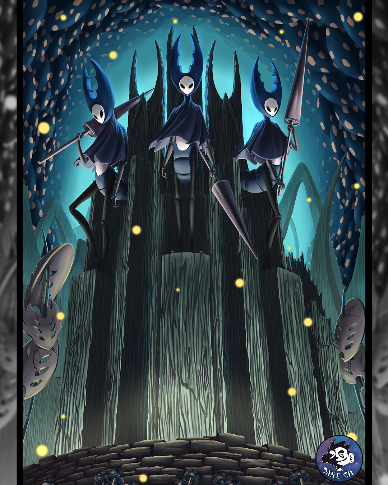

y aqui una pequeña descripccion
El origen: antes de Hallownest Mucho antes de que existiera Hallownest, las distintas especies de insectos vivían sin una verdadera civilización. En esa época, la diosa Radiance era adorada por la Tribu de las Polillas y gobernaba sobre ellas desde el Reino de los Sueños. Su luz les daba conciencia y las mantenía unidas bajo su voluntad. ________________________________________ La llegada del Rey Pálido Un día llegó un antiguo ser superior llamado Pale King. En realidad era un enorme Wyrm (una criatura ancestral parecida a un gigantesco gusano) que viajó durante siglos hasta detenerse en el borde del futuro reino. Cuando llegó, abandonó su enorme cuerpo y renació con una forma mucho más pequeña: el Rey Pálido. Su antiguo cadáver todavía permanece en Kingdom's Edge. Con su inmenso poder otorgó inteligencia y libre pensamiento a los insectos. Poco a poco comenzaron a construir ciudades, carreteras, minas, templos y palacios. Así nació el reino de Hallownest. ________________________________________ La creación del reino Hallownest creció rápidamente. Se construyeron: • Ciudad de Lágrimas (City of Tears) • Pico Cristal (Crystal Peak) • Cuenca Antigua (Ancient Basin) • Jardines de la Reina • Canales Reales • Nido Profundo (Deepnest) El Rey Pálido se casó con la White Lady, otro Ser Superior. Juntos gobernaban desde el Palacio Blanco. Con el tiempo, incluso la Tribu de las Polillas dejó de adorar a Radiance para seguir al Rey Pálido, haciendo que Radiance fuera olvidada. ________________________________________ El regreso de Radiance Radiance no murió al ser olvidada. Seguía existiendo dentro del Reino de los Sueños. Molesta porque todos la habían abandonado, comenzó a aparecer en los sueños de los habitantes. Poco a poco una enfermedad conocida como La Infección comenzó a extenderse. Los insectos infectados: • Perdían la razón. • Sus ojos brillaban de color naranja. • Se volvían extremadamente violentos. • Obedecían únicamente a Radiance. Hallownest comenzó a caer lentamente. ________________________________________ Los Cinco Grandes Caballeros Para proteger el reino existían cinco héroes legendarios: • Hegemol • Dryya • Isma • Ze'mer • Ogrim (Defensor del Estiércol) Ellos lucharon para mantener el orden mientras el reino comenzaba a derrumbarse. ________________________________________ El Vacío y las Vasijas Desesperado, el Rey Pálido encontró una antigua fuerza llamada Vacío, una oscuridad infinita situada en el Abismo. Junto con la Dama Blanca tuvo cientos o miles de hijos. Todos esos hijos fueron arrojados al Abismo. La mayoría murió. Estos niños eran conocidos como Vasijas (Vessels). Su propósito era ser completamente vacíos, sin mente, emociones ni voluntad, para poder contener a Radiance. ________________________________________ El Hollow Knight Entre todas las Vasijas, el Rey eligió una. Era la más fuerte y aparentemente la más pura. Fue llamada: The Hollow Knight El Rey Pálido la entrenó durante años. Cuando estuvo lista, Radiance fue sellada dentro de ella. Parecía que Hallownest estaba salvado. ________________________________________ Los Soñadores Para asegurar el sello fueron elegidos tres guardianes. Lurien Vigilaba desde la Aguja del Vigilante. ________________________________________ Monomon La gran científica del reino. Protegía el sello desde los Archivos de la Maestra. ________________________________________ Herrah Reina de Deepnest. Aceptó convertirse en Soñadora con la condición de tener una hija. Esa hija sería Hornet. Los tres quedaron dormidos eternamente para mantener cerrado el Templo del Huevo Negro. ________________________________________ Hornet Hornet Es hija del Rey Pálido y Herrah. Fue criada para proteger Hallownest. Durante el juego pone a prueba al Caballero porque quiere comprobar si realmente puede reemplazar al Hollow Knight. Características: • Usa una aguja e hilo. • Muy rápida. • Gran habilidad de combate. • Protectora del reino. ________________________________________ El error del Rey Con el tiempo ocurrió algo inesperado. El Hollow Knight desarrolló un pequeño sentimiento hacia el Rey Pálido. Ese simple vínculo emocional hizo que dejara de ser completamente vacío. Radiance encontró esa pequeña grieta. Y logró escapar lentamente. La Infección volvió. El plan había fracasado. ________________________________________ La caída de Hallownest La infección destruyó casi todo. Miles de insectos murieron. Otros perdieron completamente la mente. El Rey Pálido desapareció dentro del Palacio Blanco. Hallownest quedó abandonado. ________________________________________ El Caballero Muchos años después aparece el protagonista: The Knight También es una Vasija. Había escapado del Abismo cuando era pequeño. Regresa al reino para descubrir la verdad. Su misión consiste en derrotar a los tres Soñadores y llegar hasta el Hollow Knight. ________________________________________ Los jefes importantes y su historia False Knight Un pequeño gusano encontró la enorme armadura de Hegemol y decidió usarla para hacerse pasar por un héroe. Características • Muy resistente. • Usa un enorme mazo. • Ataques lentos pero devastadores. ________________________________________ Hornet Guerrera encargada de probar al Caballero. Características • Extremadamente rápida. • Aguja de largo alcance. • Coloca trampas con hilo. ________________________________________ Soul Master Buscando derrotar la muerte, experimentó con almas hasta enloquecer. Características • Teletransportación. • Magia. • Ataques desde el aire. ________________________________________ Dung Defender Es Ogrim, uno de los Cinco Grandes Caballeros. Sigue defendiendo Hallownest incluso después de su caída. Características • Lanza bolas de estiércol. • Excava bajo tierra. • Muy resistente. ________________________________________ Broken Vessel Otra Vasija abandonada que fue completamente consumida por la Infección. Características • Muy veloz. • Invoca globos infectados. • Usa ataques del Vacío y de la Infección. ________________________________________ Traitor Lord Líder de un grupo de mantis que aceptó la Infección para obtener más poder. Características • Ataques muy rápidos. • Grandes golpes físicos. • Ondas de energía. ________________________________________ The Hollow Knight El héroe elegido por el Rey Pálido. Lucha mientras intenta contener a Radiance. Durante el combate incluso se hiere a sí mismo intentando recuperar el control. Características • Espada muy rápida. • Ataques infectados. • Gran velocidad y alcance. ________________________________________ Radiance La verdadera enemiga del juego. Es la antigua diosa olvidada que busca recuperar el control sobre Hallownest. Características • Controla la luz. • Invoca espadas. • Dispara rayos. • Crea orbes de energía. • Es el jefe final del final verdadero. ________________________________________ El final verdadero Cuando el Caballero obtiene el Corazón del Vacío, enfrenta directamente a Radiance dentro del Reino de los Sueños. Con ayuda del Vacío derrota definitivamente a Radiance, liberando a Hallownest de la Infección y poniendo fin al ciclo que comenzó cuando el Rey Pálido llegó al reino. Sin embargo, el destino exacto del Caballero y del Vacío queda abierto a interpretación, uno de los aspectos que hace tan especial el lore de Hollow Knight.
